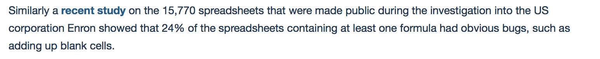
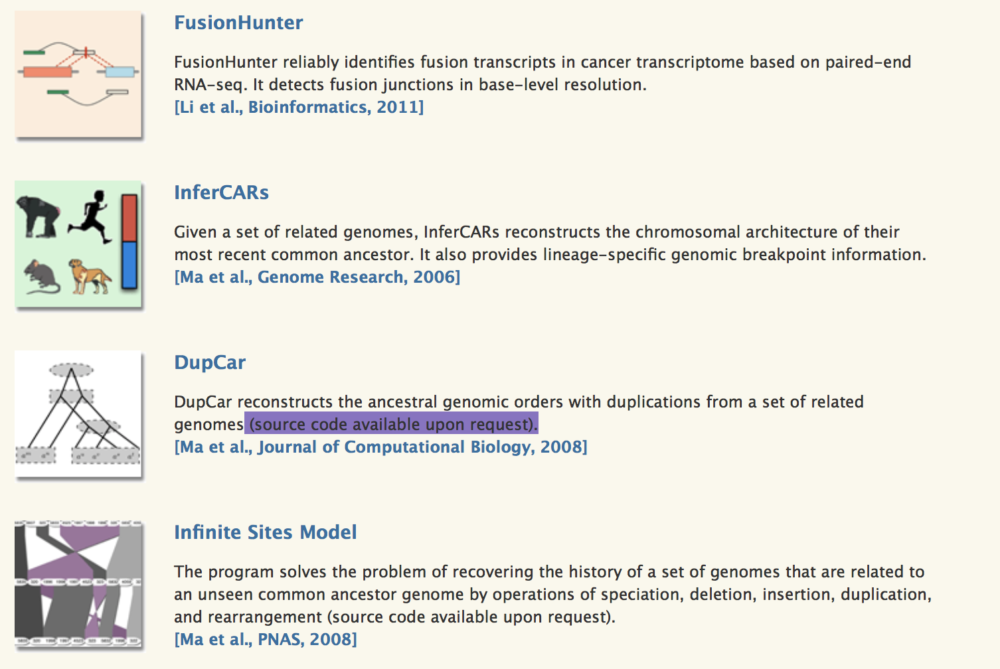

Tania Allard
What has reproducibility even done for us?
A primer
November 9th, 2017
@ixek
The interactive version of the slides can be found at: www.bitsandchips.me/Talks/ManchesteR.html
Who am I?
- RSE (research software engineer)
at Sheffield - Nasa DataNaut
- Mozilla Open leaders
- Reproducibility champion
- Diversity and equality in STEM advocate
- Programming instructor/mentor
Antibiotics!
About 150 years ago Pasteur demonstrated how experiments can be conducted reproducibly and the value of doing it that way.

Drugs and vaccinations in general


One more for spreadsheets
 https://www.mpls.ox.ac.uk/mplsinsights/science-relies-on-computer-modelling
"...the user interface conflated input, output, code, and presentation, making testing code and discovering bugs difficult"
Philip Stark, Science is 'show me' not 'trust me' (2015)

 http://www.nature.com/news/1-500-scientists-lift-the-lid-on-reproducibility-1.19970
http://www.nature.com/news/1-500-scientists-lift-the-lid-on-reproducibility-1.19970

Reproducible

Replicable

Robust

Reproducible
Open science
You can still have reproducible workflows without them being open!
Why is reproducibility so important?
Nowadays science relies on software no matter the discipline, the industry, or the openess of the research.

Code not available
Small bus factor

People
People

Version control is your best friend


I mainly collaborate with myself and my two-months-back self is quite bad at replying to emails
Testing is your second best friend
This is a brief intro to using testthat http://r-pkgs.had.co.nz/tests.html
Automate
Minimize the user dependent steps

Document, share, report... and keep updated
- Rmarkdown
- WorflowR
Science is a conversation
- A conversation between scientists and their body of knowledge
- A conversation among scientists
- A conversation between scientists and machines
Something else
Consider your execution environment: help others to run your scripts by using something like Docker* or Packrat**
*or any other option for containerization e.g. Vagrant, Kubernetes
**a package manager for R
**a package manager for R
Thank you all